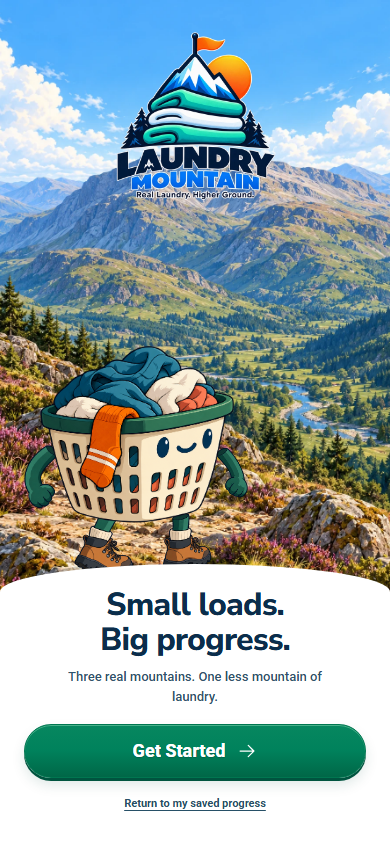
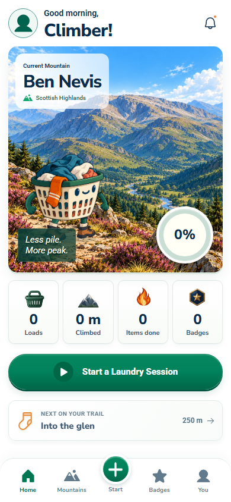
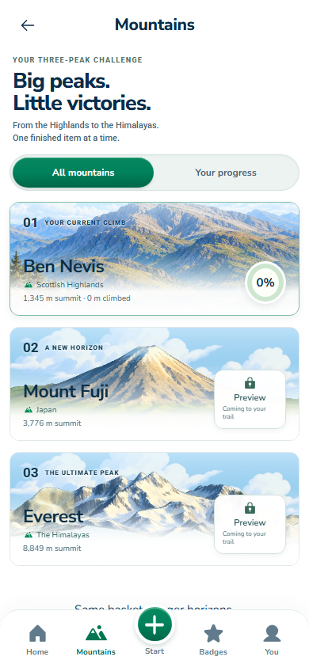
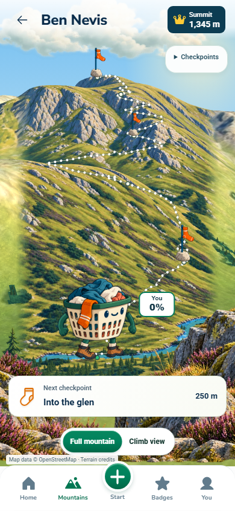
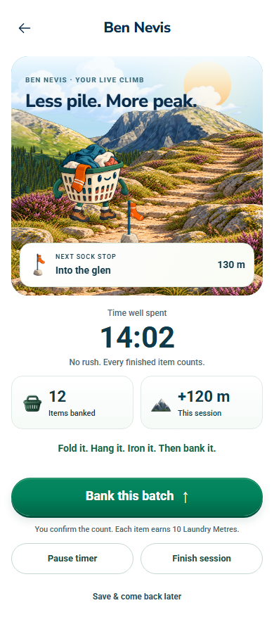
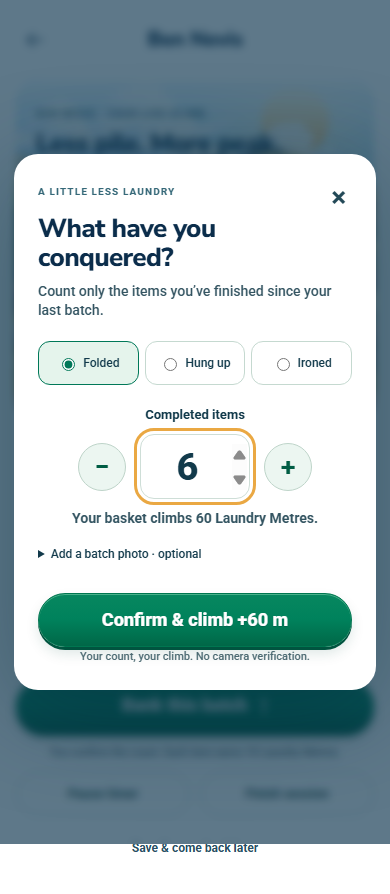
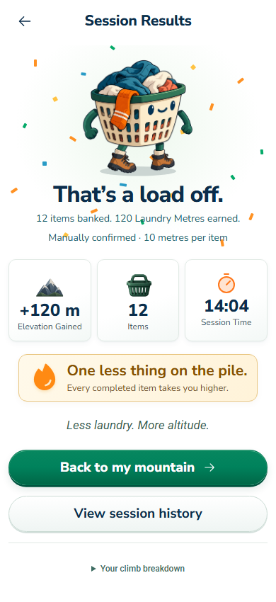
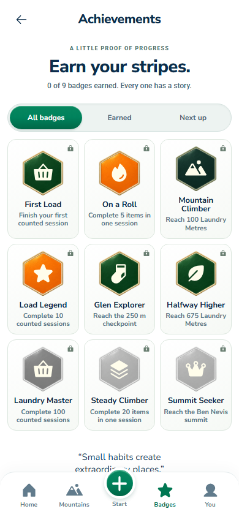
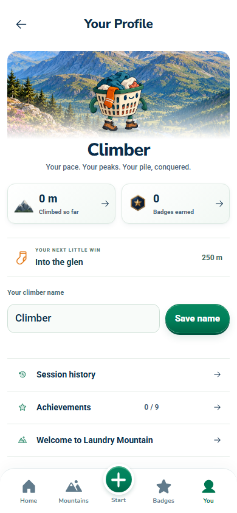
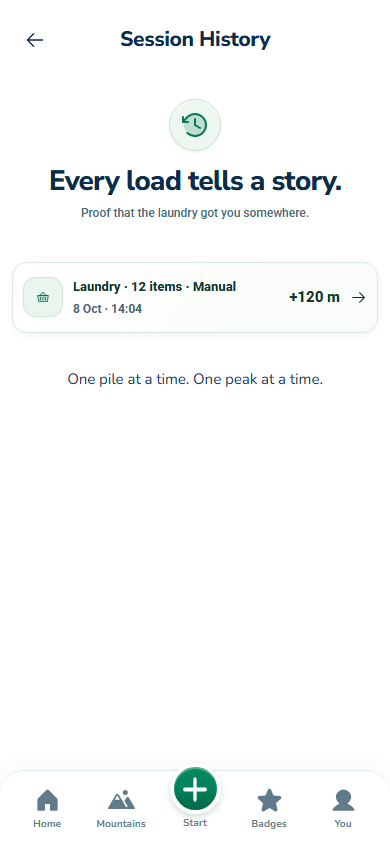

Current implemented app · 8 October 2026. Ben Nevis, Mount Fuji and Everest. Community removed. Populated session screens use isolated manual-count fixtures; this is a visual review, not gameplay or AI acceptance. Fuji and Everest remain previews.









